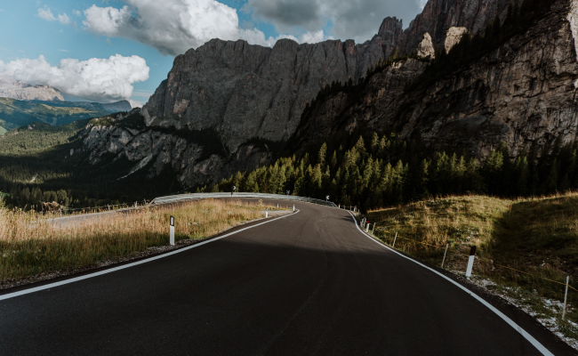
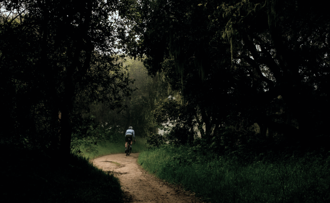

Шоссе, ТТ и Грэвел
Триатлонные старты, горные серпантины или грейвел заезды по живописным маршрутам – нужно только определиться с выбором велосипеда и отправиться в путь.
Подробнее
Cannondale Systemsix


«Катайся много или мало, долго или коротко, как хочешь - но катайся»
Шоссе
На шоссейном велосипеде можно ездить по асфальту на разных градиентах: будь то горы или равнины. Гонки проходят в командном пелотоне, но тренироваться можно и самостоятельно.



-
 Cervelo Caledonia-5
Cervelo Caledonia-5
-
Cannondale Systemsix Himod
-
 Trek Domane SL-7
Trek Domane SL-7